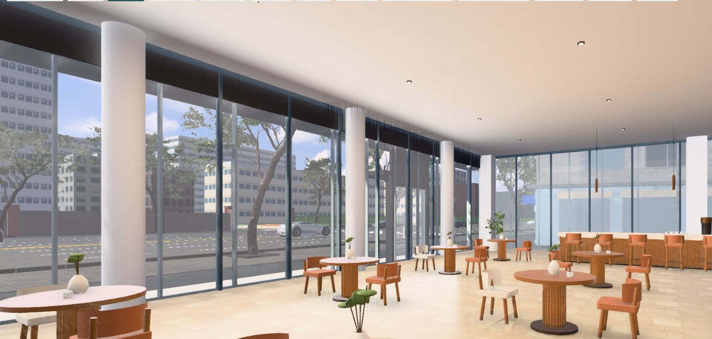
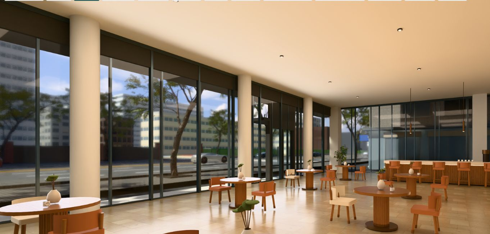

1층 카페 — 원본 실사와 실시간 3D
2026-10-16 · 확정 모델의 평면·기둥·창·코어를 유지한 인테리어 검토용 구현입니다. AI 실사 이미지와 동일한 카메라/설계 데이터가 없어 근사 구도를 비교합니다.
실시간 나란히 비교 열기 → · 카페 전체 화면 →
기존 실사 · 1F 카페 / 시점 1 (AI 이미지) 현재 3D · 실시간 화면 / 정밀 렌더 대기 없음
현재 3D · 실시간 화면 / 정밀 렌더 대기 없음
현재 3D · 정밀 64샘플 계산 완료
아직 동등한 실사 품질은 아닙니다. 정밀 모드는 바닥 반사와 명암이 개선되지만 별도의 대기 시간이 필요합니다. 원본의 강한 자연광·바닥 반사, 세밀한 가구와 소품, 풍부한 조경에는 차이가 있습니다. 구조를 AI 이미지에 맞춰 바꾸지 않았으며, 카운터와 가구 배치는 확정 설계가 아닌 예시입니다.
추가: 우드 루버 카운터·커피 장비·곡면 의자·공용 테이블·다운라이트·펜던트·실내 식재, 따뜻한 실내 조명, 512px/64방향 접촉 AO 베이킹. 실사 7개 시점은 비교 메뉴에서 선택할 수 있습니다.
조작: 드래그로 둘러보기, 휠로 화각 조절, WASD로 이동, Q/E로 높이 조절, Home으로 외부 복귀. 모든 층의 실내가 이 품질로 구현된 것은 아닙니다.